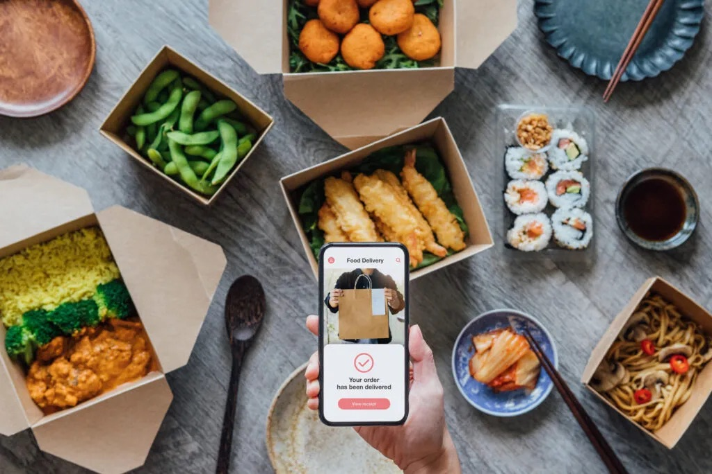
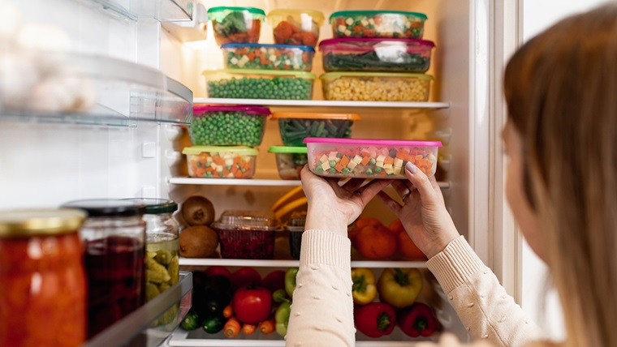
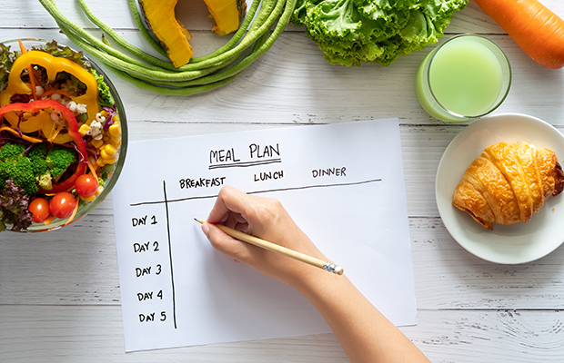
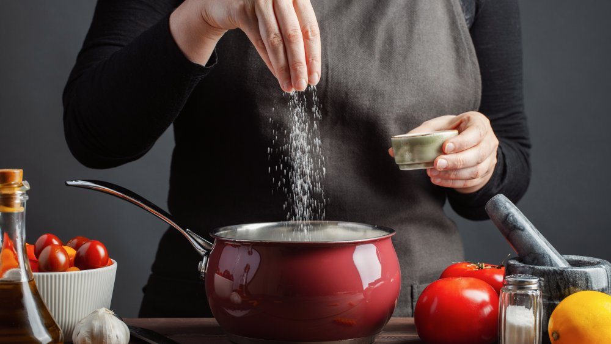

Created by Qihong Liu [Anser] and Chanya Chumdee [Yaya]
Here we will discuss the pros and cons of food delivery and cooking at home. With the thrive of internet and city development, food delivery has become a popular trend of eating among the young people.

Food delivery is an extremely convenient option if you want a meal. You don't need to cook, buy ingrdients or even go out. A research mentioned in an article(1) indicated that the meal preparation time for usual meal preparers who purchased fast food was 27 minutes, versus 58 minutes for those who did not purchase fast food—a time savings of 31 minutes, saving more than half of the time, not to mention the clean-up time for cooking at home. That is why food delivery is an extremely convenient option
Although cooking at home requires more time and effort to prepare the cooking process and clean up the kitchen, it can be faster by meal planning and practice. Meal planning helps an individual to think about their meal ahead of time, so they can prepare all of the ingredients for the following day which reduces time consuming while cooking and to choose a menu or answer the question about what should i eat today?. Another point is that the cooking process can be faster by practicing. For the first time doing something new, it usually takes time to get better but when we get used to it we can do it quicker than in the past.
Some may argue that the food delivery serveice is much expensive than cooking at home, but consider the transpotaion fee on the way to buy the ingrdients, the energy usage such as electricity or gas and the ingredients that can not be fully consumed, the cost different between deliveried food and home-made food may not be as large as most people think due to these potential cost.
On the other hand, cooking at home is highly cost efficient as there are various benefits of meal planning which is control the cost and it also not creating food waste. Meal planning ahead of time is putting the cost under control especially when individuals need to stock up the ingredient they will have a purpose for shopping just only buy the thing in a list and buy the ingredient that is necessary for cooking. Which has a direct effect on reducing food waste as we can plan the menu and consume it week by week and the ingredient will not rot or expire just because we forgot and left it in the fridge.
It is true that the major position in delivery market is hold by fast food, but there are also some delivery services that are providing more heathler option, such as Factor, Epicured, Daily Harvest and Sunbasket.
Although the tendency of healthy food has become more popular and there are various options on food delivery, there is also a negative effect. We can not deny that when we rely on food delivery, we can not control the flavour of the food which affects health issues such as obesity and Chronic kidney disease. On top of that, it might has a micro plastic mix in the container of the food due to the heat of the food or boiling soup.
In conclusion, food delivery serve convenience and time savings, requiring less effort and skill compared to cooking at home. On the contrary cooking can be time-consuming, meal planning and practice can make it faster. Cost efficiency regarding transportation fee aspect, food delivery is not that different compared to cooking at home while cooking at home is more efficient, as meal planning helps control expenses and reduce food waste. In terms of health, although there are various choices on food delivery, cooking at home is safer due to food delivery lack of flavored control and possible microplastics from containers. Both food delivery and cooking at home have different advantages and disadvantages. Eventually it depends on life conditions and preference.